Characters
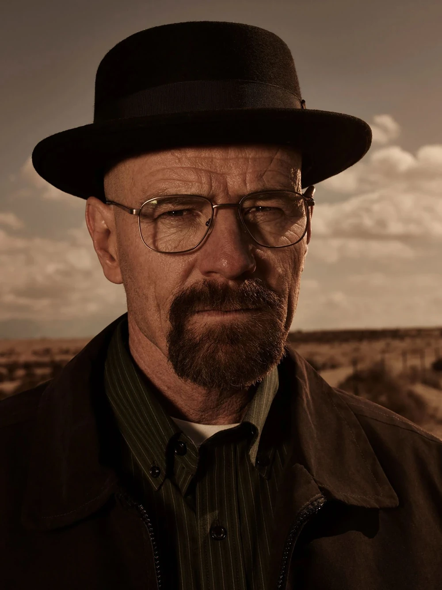
Walter White
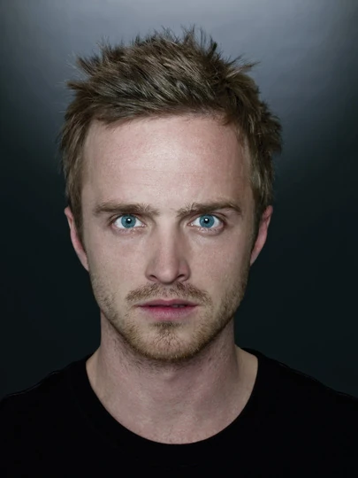
Jesse Pinkman

Skyler White
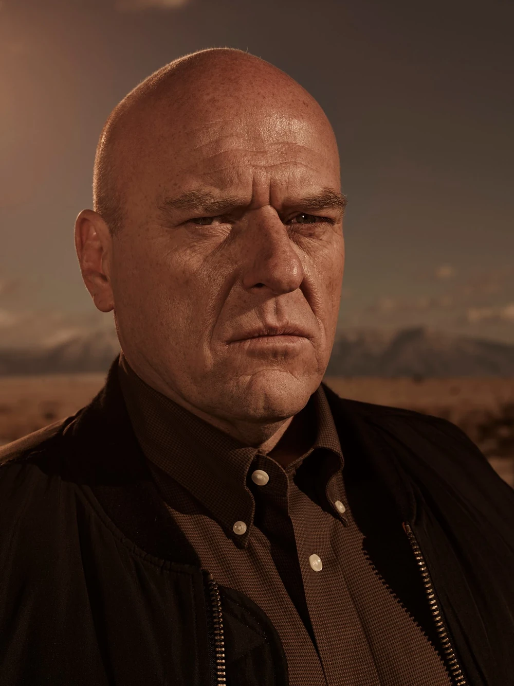
Hank Schrader
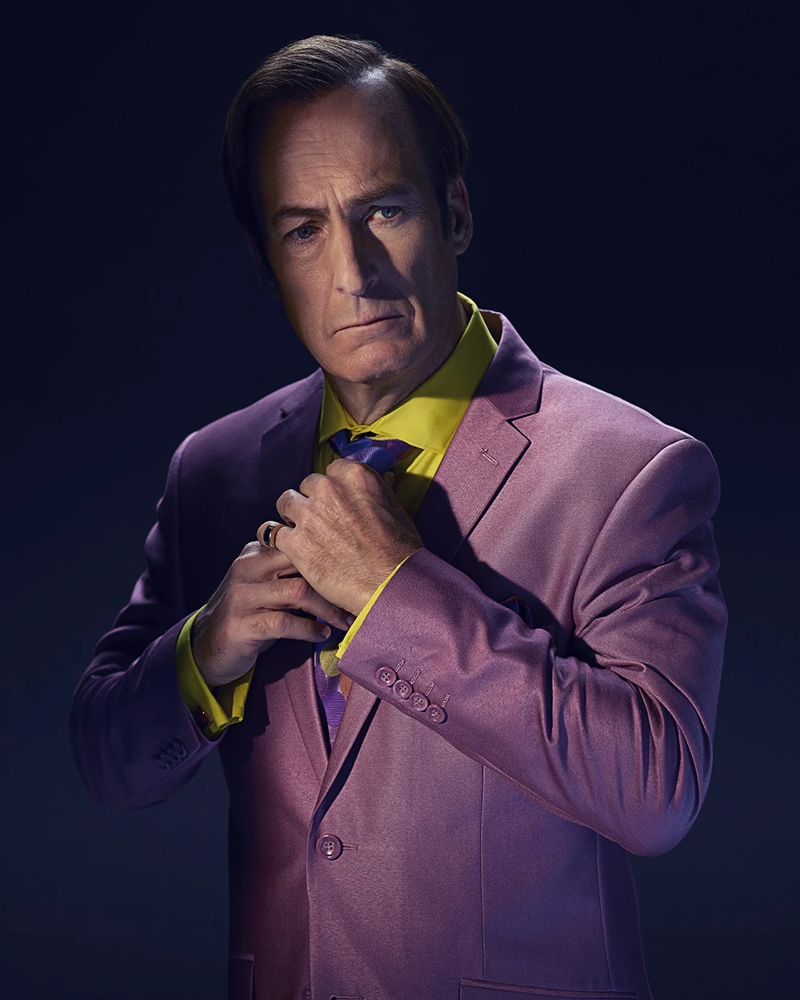
Saul Goodman
Gus Fring
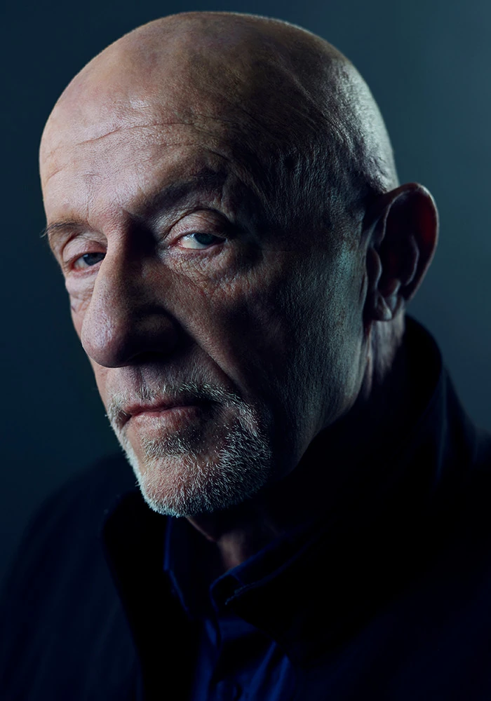
Mike Ehrmantraut
Marie Schrader

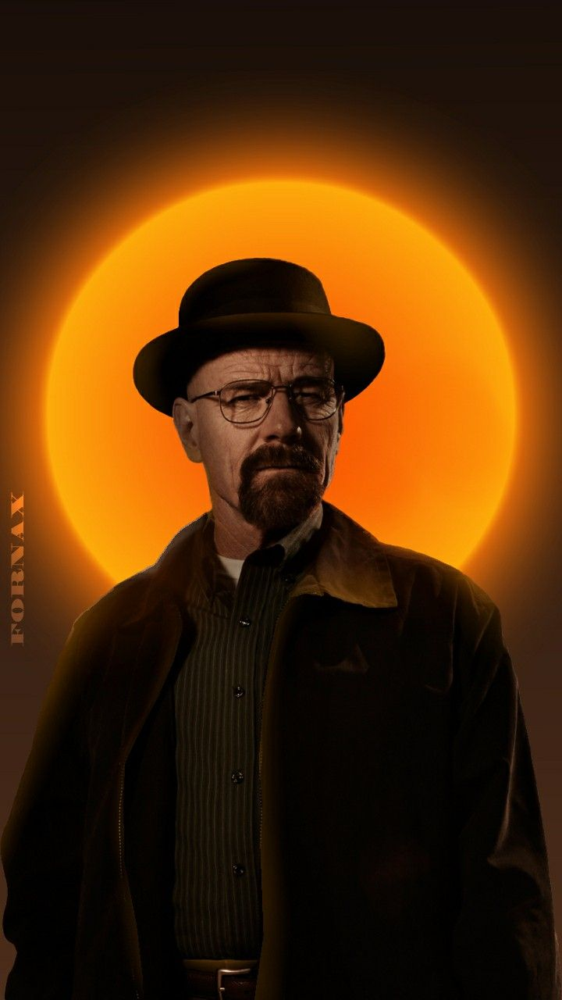
TV Series 2008–2013 TV-MA 45m 9.5/10
Breaking Bad is an American crime drama television series created by Vince Gilligan. It follows Walter White, a struggling high school chemistry teacher turned methamphetamine producer, and his former student Jesse Pinkman. Set in Albuquerque, New Mexico, the show explores how ordinary people can be transformed by desperate circumstances and moral compromise.
As Walter’s empire grows, he adopts the alias Heisenberg — a symbol of his descent into power, ego, and corruption. The series is acclaimed for its complex characters, sharp writing, and stunning cinematography.
Spanning five seasons (2008–2013), Breaking Bad became one of the most celebrated TV shows of all time, praised for its storytelling, performances, and moral depth.
🎬 Genre:





Quote
"I am the one who knocks."
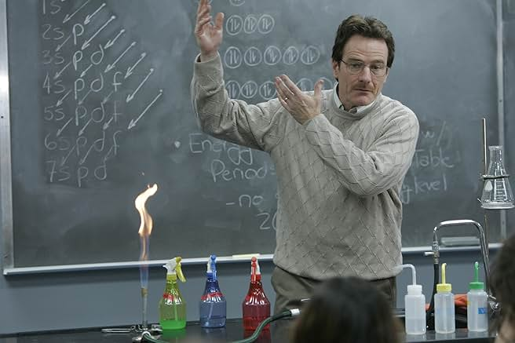
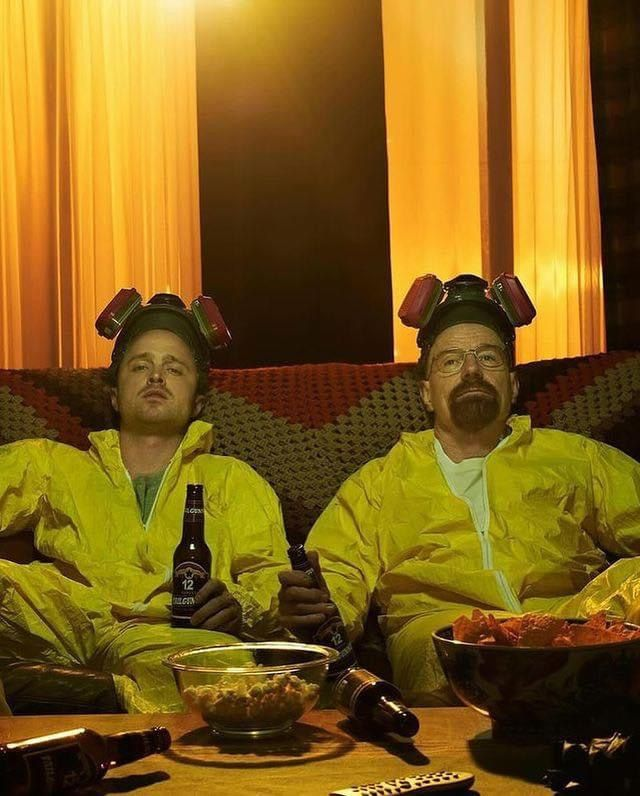
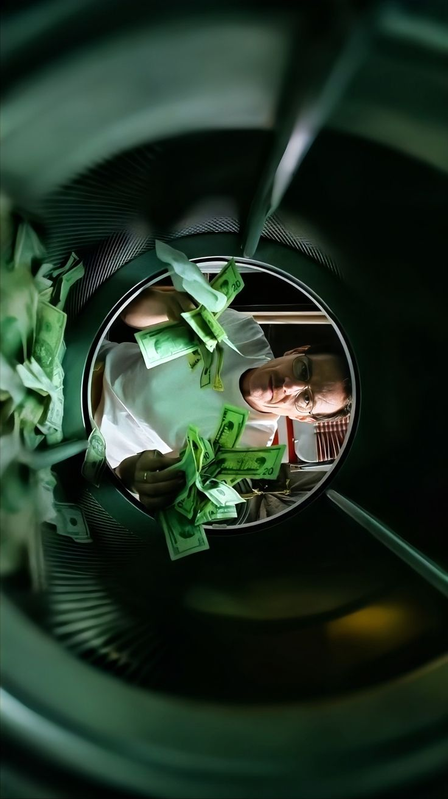
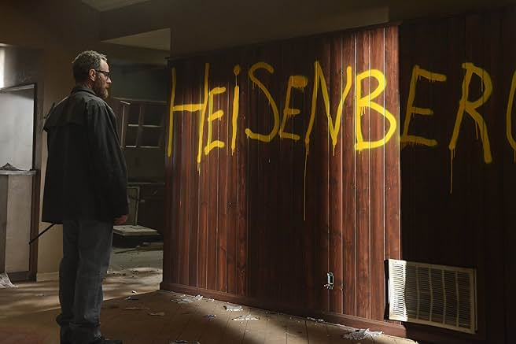
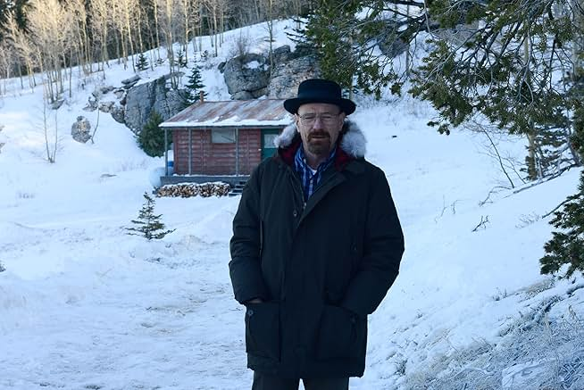
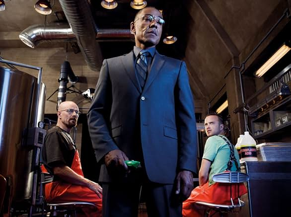